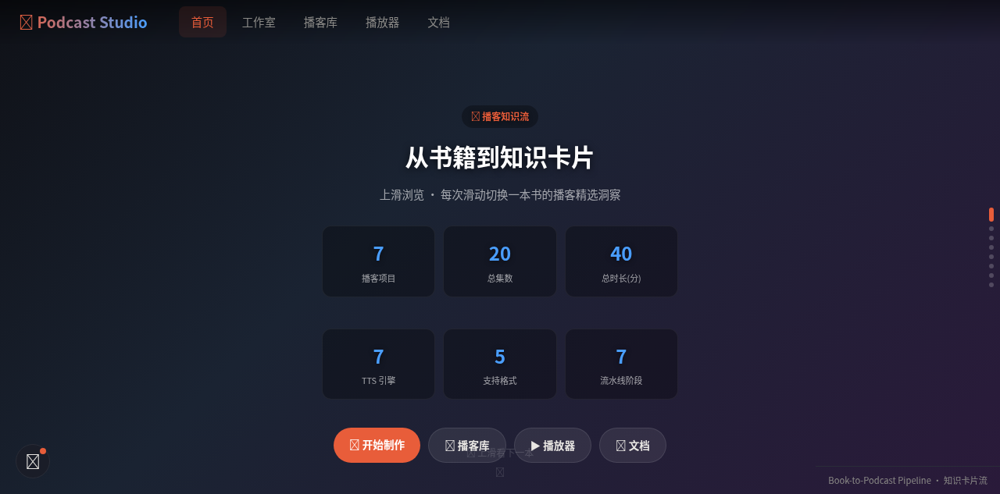
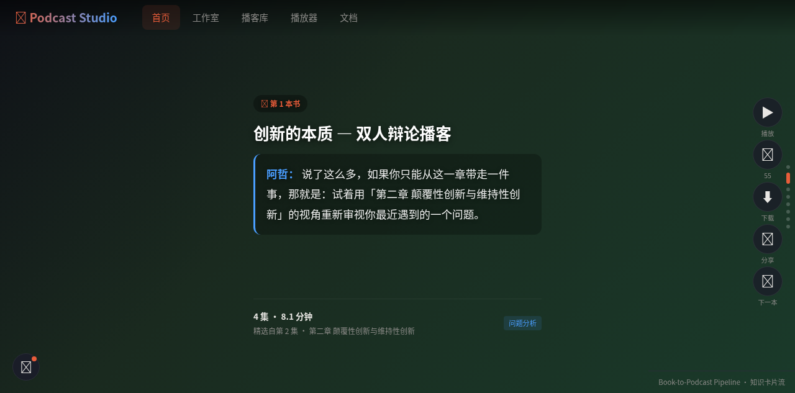
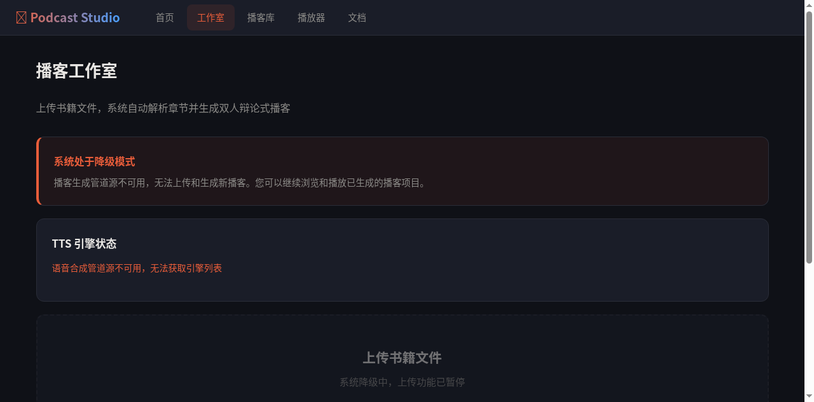
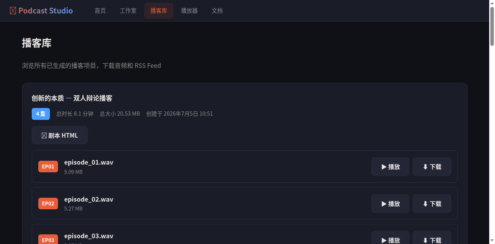
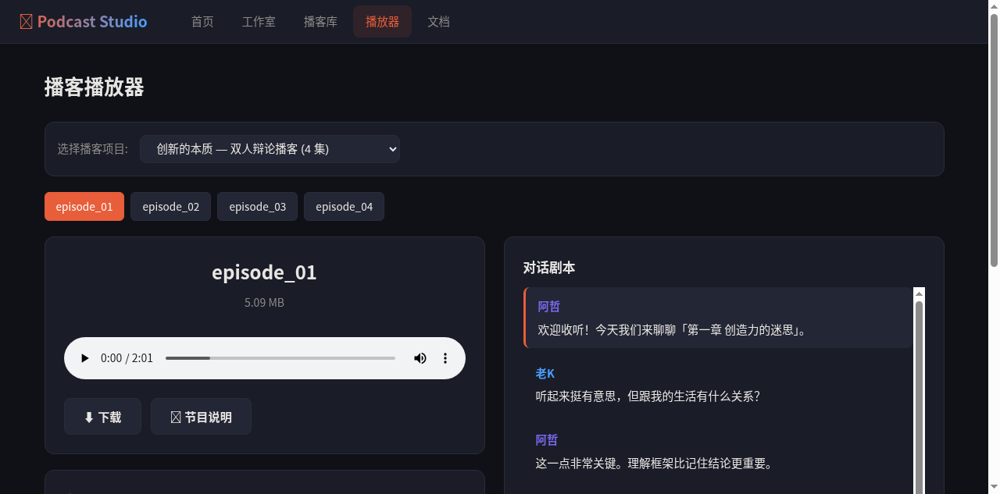
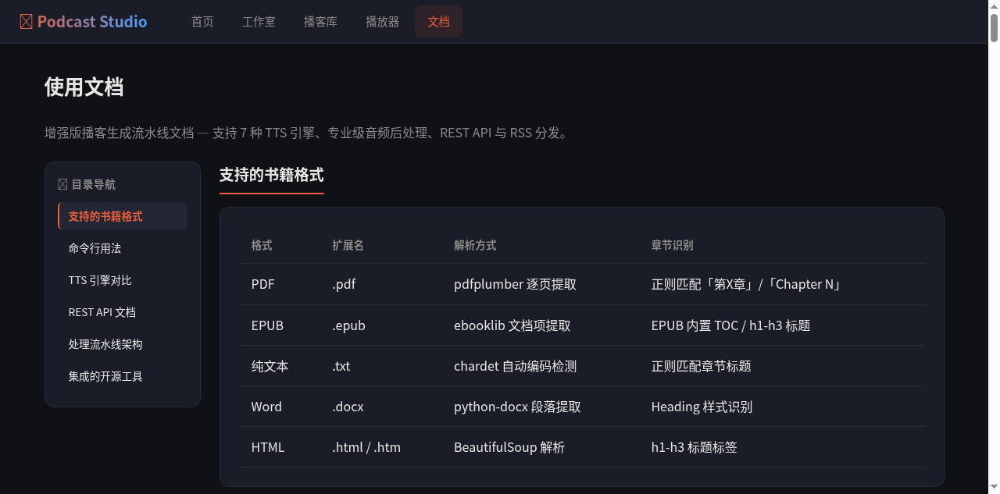

移动端体验评估报告
Podcast Studio 全站移动端（iPhone 12 / 390x844）视觉体验与交互可用性深度分析
各页面评分总览
整体设计基础扎实，深色主题配色专业，但在移动端触控优化和响应式布局重构方面存在明显短板。当前多数页面仍为桌面端设计的简单缩放，缺乏移动端专属交互模式。
一、首页 — 知识卡片流


优势
抖音式全屏沉浸卡片流设计视觉层次清晰，渐变背景每张卡片不同色系，避免了审美疲劳。欢迎卡片的统计数据网格（7播客 / 20集 / 40分钟）信息密度适中，一眼可获取全站概览。知识卡片底部的引用区域使用左侧蓝色竖线装饰，对话体辨识度高，说话人名称用不同颜色区分（阿哲紫色、老K蓝色）。
问题
导航栏 5 项水平挤压，触摸目标过小
5 个导航项（首页/工作室/播客库/播放器/文档）+ Logo 挤在 390px 宽度内，每项约 50x32px，远低于 Apple HIG 要求的 44x44pt 最小触摸目标。用户极易误触相邻导航项。
右侧操作栏按钮位于拇指盲区
播放/点赞/下载/分享/下一本 5 个按钮垂直排列在屏幕右侧中部偏上位置。对于 6.1 英寸手机，右手拇指需大幅伸展才能触及顶部"播放"按钮，左手持机时"下一本"也难以触及。
欢迎卡片 3 列网格在小屏挤压严重
6 个统计卡片以 2 行 3 列排列，单卡片宽度仅约 110px。数字虽大但标签文字（"播客项目"/"总集数"等）字号约 11px，在移动端阅读吃力。
底部操作按钮触摸区域不足
"开始制作""播客库""播放器""文档"四个按钮横向排列，高度约 36px，低于 44px 标准。相邻按钮间距不足 8px，极易误触。
未适配 iPhone 底部安全区域
当前设计未预留 iPhone Home Indicator 区域，底部"上滑看下一本"提示和健康检查浮窗可能被手势条遮挡。
padding-bottom: env(safe-area-inset-bottom) 确保底部元素不被遮挡。二、工作室 — 上传与生成

优势
降级模式的提示设计专业且得体：左侧橙色竖条边框 + 标题正文分层的卡片设计，准确传达"降级可用"而非"完全崩溃"的状态。底部上传区域大面积触摸区设计（约 120-160px 高），远超 44px 最小标准，拇指易触及。单栏全宽卡片布局在移动端表现优秀，信息层级递进清晰。
问题
禁用状态视觉反馈不够明显
上传按钮的禁用状态仅通过文字颜色变化（变灰）传达，视觉上与正常状态差异不大。用户可能反复尝试点击。
TTS 引擎状态错误色过于刺眼
红色错误文字在深色背景下对比度过高，长时间观看可能引起视觉不适。
三、播客库 — 已生成列表

优势
分层卡片设计（外层项目卡片包裹内层分集列表）信息层级清晰。橙色 EP01/EP02 标签作为视觉锚点，方便快速定位。播放/下载按钮右侧对齐，符合 F 型阅读动线。
问题
播放/下载按钮高度不足 44px
按钮视觉尺寸约 72x36px，高度低于 44px 标准。并排间距约 8px，快速操作时易误触相邻按钮。在 390px 窄屏下尤为明显。
长文件名无截断处理
"episode_01.wav" 文件名在窄屏下虽未溢出，但若文件名更长（如含中文标题）会直接溢出或换行，破坏布局。
max-width: 60%; white-space: nowrap; text-overflow: ellipsis; overflow: hidden; 确保文件名单行显示并截断。缺少粘性标题和全局播放器
长列表滚动时项目标题消失，用户丢失上下文。播放音频后无法在列表页快捷控制播放（暂停/进度），必须返回播放器页面。
分集超过 4 集时列表过长
当前 7 个项目 x 平均 3 集 = 21 行分集列表，全部展开导致页面极长，用户需要大量滚动才能浏览所有项目。
四、播放器 — 播放与剧本

优势
对话剧本区域的说话人色彩编码设计出色：阿哲紫色、老K蓝色，配合左侧彩色竖线边框，双重编码快速区分。点击剧本行可跳转到对应播放位置，播放同步高亮当前行。剧本区域独立滚动，不干扰播放器操作。
问题
播放器页面未做移动端布局重构
当前为桌面端左右分栏布局的简单堆叠（CSS Grid 1fr 1fr 在移动端变为单列），但播放器控件、音频详情表格、对话剧本三块内容垂直堆叠后页面极长，用户需要大量滚动才能从播放控件到达剧本区域。
剧集选择器仅显示文件名，信息密度过低
"episode_01"~"episode_04"标签对用户毫无意义，无法预判每集内容。在移动端横排 4 个标签尚可，但 10 集以上会溢出。
音频详情表格在移动端冗余
"格式/采样率/声道/时长/文件大小"五行技术参数对普通用户价值低，占用大量垂直空间。且部分字段显示"-"（数据未正确读取）。
播放器未固定在视口内
用户向下滚动浏览剧本时，播放控件会滚出视口，无法暂停或查看进度。需要返回顶部才能操作播放控件。
position: sticky; top: 56px; 固定在导航栏下方，确保滚动时始终可见。五、文档 — 使用说明

优势
目录导航的位置感知设计出色：橙色竖线+文字变色双重指示当前章节，用户始终知道自己在文档中的位置。文档文字对比度极高（白色 on 深蓝黑），超过 WCAG AAA 标准，长时间阅读不疲劳。技术术语使用等宽字体区分，信息层级分明。
问题
侧边栏目录在窄屏占用过多宽度
目录侧边栏约 200px 宽，在 390px 屏幕上占 51% 宽度，严重压缩主内容区域。虽然目录提供了导航锚点，但阅读时侧边栏成为视觉干扰。
数据表格在窄屏需要横向滚动
"格式/扩展名/解析方式/章节识别"四列表格在 390px 屏幕上拥挤，部分列内容被截断或需横向滚动。
overflow-x: auto 包裹并添加滚动提示。缺少代码块专用样式
文档中出现的库名（pdfplumber、BeautifulSoup 等）使用常规字体，与正文区分度不足。未见语法高亮代码块。
background: var(--bg3); padding: 2px 6px; border-radius: 4px;。六、全站共性问题
1. 导航栏全站不适配移动端
所有 5 个页面的顶部导航栏都是桌面端设计直接用于移动端。5 个导航项 + Logo 在 390px 屏幕上严重挤压，触摸目标约 50x32px，远低于 44x44pt 标准。这是全站最高优先级的移动端问题。
2. 缺少全局 Mini Player
播放音频后离开播放器页面（如返回播客库浏览），音频会继续播放但无法在任何页面快捷控制。用户必须返回播放器页面才能暂停或查看进度。
3. 未适配 iPhone 安全区
全站未使用 env(safe-area-inset-*) 环境变量，导致顶部状态栏和底部 Home Indicator 区域可能遮挡内容。
4. 缺少加载状态和骨架屏
页面切换时只有"加载中..."文字，缺少骨架屏或加载动画，网络延迟时用户体验空白。
七、优化优先级清单
-
全站导航栏改为移动端模式底部 Tab + 汉堡菜单，触摸目标 ≥ 44px。影响全站 5 个页面。
-
播放器页面移动端布局重构播放控件 sticky 固定，剧本可折叠，音频详情折叠，剧集选择器改下拉。
-
播客库列表优化分集默认折叠，文件名截断，按钮高度 ≥ 44px，添加 sticky 项目标题。
-
首页右侧操作栏重新定位高频操作下移至拇指热区，底部预留 safe-area 安全区。
-
添加全局 Mini Player底部固定播放控制栏，全站可暂停/查看进度，点击展开完整播放器。
-
文档页侧边栏移动端折叠目录改为顶部按钮触发，表格转卡片式堆叠，添加代码块样式。
-
全站安全区适配添加 env(safe-area-inset-*) 适配 iPhone 刘海和底部手势条。
-
加载状态与骨架屏所有异步加载页面添加骨架屏，避免白屏等待。
八、各页面问题汇总
| 页面 | P0 严重 | P1 重要 | P2 优化 | 评分 |
|---|---|---|---|---|
| 首页 | 2 | 2 | 1 | 7.0 |
| 工作室 | 0 | 1 | 1 | 8.5 |
| 播客库 | 2 | 2 | 0 | 6.5 |
| 播放器 | 2 | 2 | 0 | 6.0 |
| 文档 | 0 | 2 | 1 | 8.0 |
| 全站共性 | 1 | 2 | 1 | — |
共计 7 个 P0 严重问题、11 个 P1 重要问题、4 个 P2 优化项。P0 问题集中在触摸目标尺寸和布局重构，直接影响移动端核心可用性。